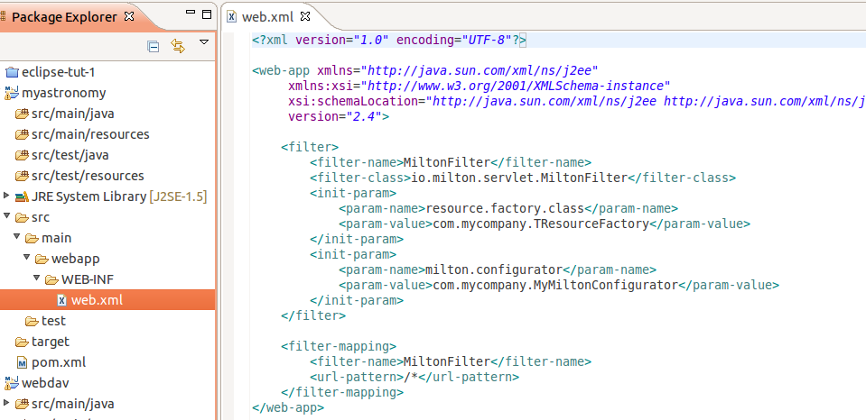

We need to add the milton filter to the WEB-INF/web.xml file for milton to load, and as part of setting that up we configure the hook which connects milton to our application.
So create the src/main/webapp/WEB-INF/web.xml file and then paste the following into it:
<?xml version="1.0" encoding="UTF-8"?>
<web-app xmlns="http://java.sun.com/xml/ns/j2ee"
xmlns:xsi="http://www.w3.org/2001/XMLSchema-instance"
xsi:schemaLocation="http://java.sun.com/xml/ns/j2ee http://java.sun.com/xml/ns/j2ee/web-app_2_4.xsd"
version="2.4">
<filter>
<filter-name>MiltonFilter</filter-name>
<filter-class>io.milton.servlet.MiltonFilter</filter-class>
<init-param>
<param-name>resource.factory.class</param-name>
<param-value>com.mycompany.TResourceFactory</param-value>
</init-param>
</filter>
<filter-mapping>
<filter-name>MiltonFilter</filter-name>
<url-pattern>/*</url-pattern>
</filter-mapping>
</web-app>
And your project should then look like this:

(Oops! the init-param for milton.configurator shouldnt be there. I'll correct the image later)